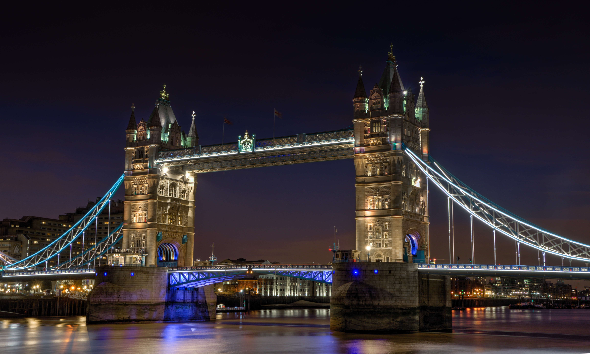
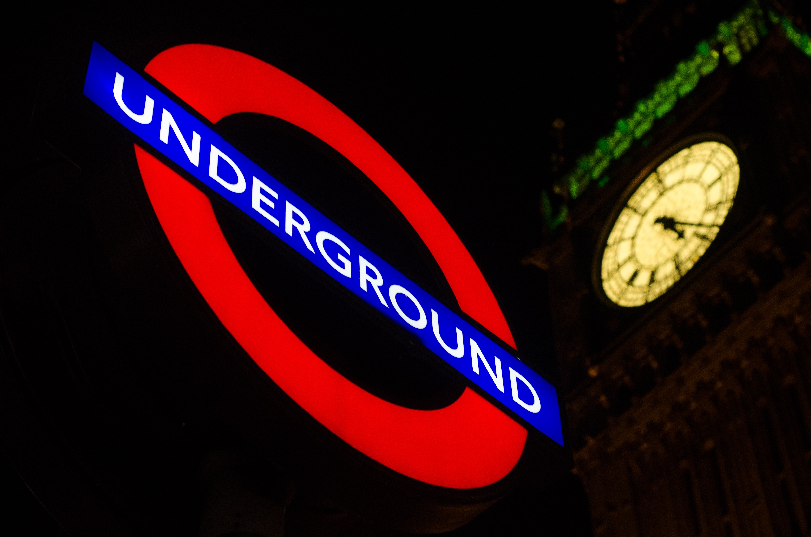

We've spent enough time inside over the last 18 months – it's time to re-immerse ourselves in all the things London has to offer. From clubbing to craftivism, and kayaking to karaoke, the city’s after-dark activities are more diverse than our pandemic routine of Zoom quizzes and Netflix binges. Whether you want to try something new or reacquaint yourself with an old favorite event, these 50 best nights out in London offer something for everyone.

London by night bus? No thank you. London by night kayak, however? That we can – quite literally – get on board with. Secret Adventures’ Night Kayak tours allow you to see our twinkling landmarks from a whole new angle. The adventure starts at the beach next to St Mary’s Church, Battersea, and finishes in Greenwich.
Alternatively, Spending your night in a multi-storey car park might not sound like the ideal night out, but Peckham Levels isn’t your average motor-filled concrete block. Instead, it’s packed with food vendors dishing up mouth-watering street food from all over the world, including Plantain Kitchen's West African eats, Beza Ethiopia’s vegan smorgasbord and Boxwallah’s twists on Delhi-inspired classics.